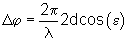
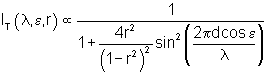

L'aplicació permet estudiar els factors que intervenen en un experiment amb un interferòmetre de Fabry-Pérot. Es pot visualitzar el resultat de les interferències amb ones múltiples que es produeixen a l'interferòmetre per una font extensa. L'experiment es fa per dues longituds d'ona molt properes i així poder estudiar el poder resolutiu de l'instrument en diferents condicions. Es pot investigar a més la influència del coeficient de reflexió de les cares internes de l'interferòmetre en la visibilitat dels anells d'interferència i en el poder resolutiu.
A la finestra "Transmissió i Reflexió" es mostra un dibuix esquemàtic de l'experiment virtual. Consisteix en una font extensa (a l'esquerra, amb un color relacionat amb la longitud d'ona seleccionada), una lent col·limadora (L1), la làmina de Fabry-Pérot (en cyan i groc, on el cyan representa el substrat i el groc el recobriment altament reflectant de les cares internes de la làmina), una segona lent per projectar les interferències (L2) i una pantalla (en blanc, a la dreta). La font emet llum de dues longituds d'ona molt properes, que més endavant es designaran per longitud d'ona principal (λ) i secundària (λ+Δ λ).
Es mostren també els raigs corresponents a un punt de la font, encara que no cal oblidar que són tots els punts de la font els que emeten. Si es considera el sistema òptic sense la làmina de Fabry-Pérot es pot veure que les lents L1 i L2 formen la imatge de la font sobre la pantalla, establint una correspondència punt a punt. La lent L1 fa que els raigs provinents d'un mateix punt de la font es propaguin paral·lels a l'espai entre L1 i L2 i formant un angle ε=ρ/f1, on ρ; és la distància del punt de la font a l'eix del sistema òptic i f1 és la focal de L1. Aquest angle és el mateix a dintre de la làmina de Fabry-Pérot ja que es tracta d'una làmina d'aire.
La llum experimenta múltiples reflexions a l'interior de l'interferòmetre, per cada grup de raigs que forma un determinat angle ε amb l'eix, els raigs transmesos originats en dues reflexions internes consecutives tenen una diferència de fase de:
 .
On d és el gruix de la làmina i λ la longitud d'ona de la llum. Llavors, la segona lent L2 fa convergir aquests raigs sobre un mateix punt de la pantalla, on les ones corresponents interfereixen. La intensitat corresponent a un punt serà màxima si Δφ=2mπ, i mínima si Δφ=(2m+1) π amb m = 0, ±1, ±2,...
En aquesta finestra es pot controlar el gruix
de la làmina (d), el coeficient de
reflexió de les cares internes de l'interferòmetre (r), la longitud d'ona principal de la font que es fa servir a
l'experiment (λ) i un
diferencial de longitud d'ona (Δλ) que
serveix per definir la longitud d'ona secundària de la font (λ+Δλ). Els
canvis es poden fer tant per medi dels desplaçadors o entrant el valor
directament a la caixa d'edició de la dreta del desplaçador.
Aquesta finestra mostra una gràfica de la Intensitat (per a les longituds d'ona seleccionades) en funció de la distància al centre de la pantalla. L'expressió d'aquesta intensitat és:

El botó Mides i Focals obre una finestra que permet canvia les mides de la font i de la pantalla i les distàncies focals de la lent L1 i L2. La combinació d'aquests quatre valors defineix l'angle màxim dels feixos a dintre de les làmines de l'interferòmetre i el radi màxim al que es poden observar interferències a la pantalla.
El botó Imatge intercanvia la representació gràfica de la intensitat respecte el radi per una imatge de les interferències a la pantalla.
En aquesta finestra es mostra un esquema de la làmina de l'interferòmetre, el recorregut d'un raig amb un angle θ al seu interior i les reflexions múltiples que experimenta. Permet visualitzar la diferència de fase (en unitats de π) entre dos raigs transmesos consecutius per la longitud d'ona principal i per la secundària.
La finestra permet canviar el gruix de la làmina, l'angle d'incidència dels raigs, i les longituds d'ona principal i secundària.
Aquesta finestra mostra una llista dels màxims
i mínims que es poden veure a la pantalla per la longitud d'ona principal i la
secundària. Es pot seleccionar que la llista de màxims i mínims es faci en
funció de l'angle del raig a l'interior de la làmina de l'interferòmetre o bé
en funció del radi de l'anell que es veu a la pantalla.
| Transmissió i Reflexió | Diferència de fase | ||
| Coeficient de reflexió de les cares internes de l'interferòmetre | r | Gruix | d |
| Longitud d'ona principal | λ , L1; | Diferència de fase entre dos raigs transmesos consecutius | Δ , D; |
| Longitud d'ona secundària | λ +Δλ , L2; | Angle de propagació a l'interior de la làmina | θ , A; |
| Diferència entre la longitud d'ona principal i la secundària | Δλ , DL; |